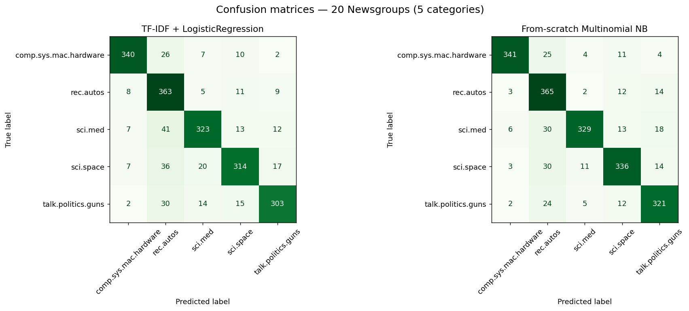

From-Scratch Build · Natural Language Processing
Drop in a piece of text — a forum post, an article, a support ticket — and get it sorted into its category, from the words alone. It's the workhorse task of applied NLP, built end to end here on the real 20 Newsgroups corpus: TF-IDF features, a logistic-regression baseline, and a Multinomial Naive Bayes I wrote from scratch in numpy to compare against it.
What it is
Document classification sounds mundane until you build it: take free-form text of any length and assign it a label — spam or not, news topic, ticket department, sentiment. Almost every practical NLP system has this shape somewhere inside it, which is exactly why it's worth building carefully rather than importing.
This build takes a real corpus — a 5-category slice of 20 Newsgroups — and turns each document into TF-IDF vectors, then trains two classifiers on identical features: a logistic-regression baseline, and a Multinomial Naive Bayes implemented from scratch in numpy. Both are scored on a held-out test split so the comparison is honest, and headers/footers/quotes are stripped so the model learns from prose, not metadata leakage.
The stack
Two models, identical features, one honest comparison.
A real labelled corpus, 5 categories, split into 2,905 train / 1,935 test documents — the ground truth.
Drop headers, footers and quotes, lowercase, remove English stopwords — so the model reads prose, not metadata.
Weight uni- and bi-grams by how distinctive they are to a document — interpretable and surprisingly strong.
An L2-regularised linear baseline whose weights you can actually read.
The multinomial event model with Laplace smoothing, written in numpy in log space — no sklearn estimator under the hood.
Per-class metrics and a confusion matrix on the held-out test split — accuracy alone lies.
Architecture
Every document follows the same represent-then-decide pipeline:
Tokenise and clean the raw text into a consistent form.
Turn the document into a fixed-length TF-IDF vector — uni- and bi-grams, stopwords removed.
Fit a classifier on the labelled training vectors.
Assign a category to each unseen document.
Score per-class performance and read the confusion matrix for blind spots.
Results
Measured on the 1,935 held-out test documents — not the training data. The random baseline for five balanced classes is 20%. The two models train on identical TF-IDF features; on this slice the from-scratch Naive Bayes actually edges out logistic regression, a reminder that the classic interpretable approach is hard to beat on bag-of-words text.
| Model | Accuracy | Macro-F1 |
|---|---|---|
| TF-IDF + LogisticRegression | 84.91% | 0.8506 |
| Multinomial Naive Bayes (from scratch) | 87.44% | 0.8758 |

rec.autos ↔ the science groups, where vocabulary overlaps.Reproduce: pip install -r requirements.txt then python train.py. Numbers above are written to results.json by that run; the test suite asserts they clear a sane floor.
Try it
Train once, then point predict.py at any text — inline, a file, or piped over stdin. It prints the predicted category and the class probabilities.
# train both models, then classify new text python train.py echo "NASA launched a rocket to study the moon and planets" | python predict.py # → Predicted category: sci.space # sci.space 99.67% ##############################
Reflection